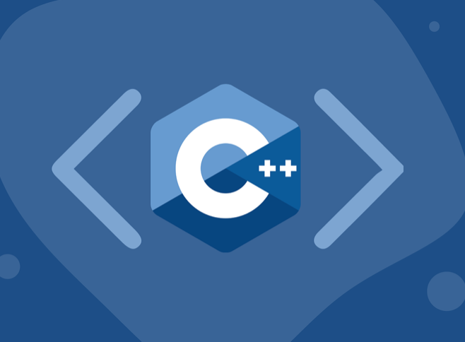
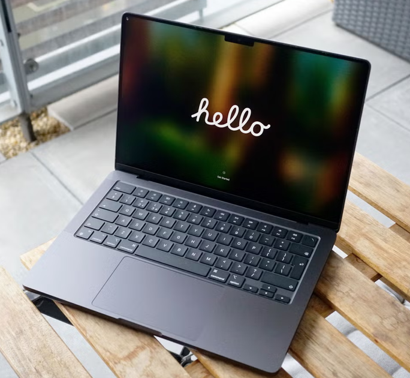
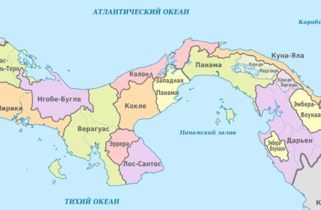
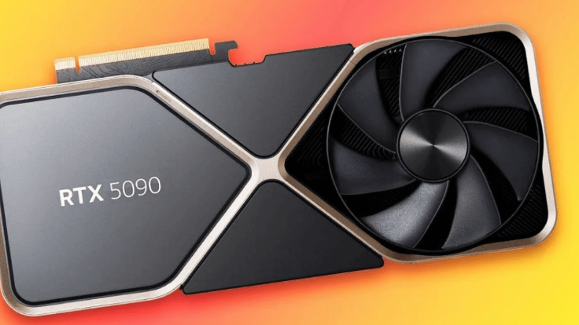

Нова серія флагманських смартфонів Samsung Galaxy S25, чий анонс очікується 22 січня, вже встигла привернути до себе увагу прихильників та інсайдерів, однак не обійшлося без несподіваних моментів.
Корейське видання FnNews повідомляє, що в Південній Кореї компанія Samsung вирішила заморозити вартість нової лінійки, тобто зберегти її на рівні Galaxy S24. Повідомляється, що Galaxy S25 у версії 256 ГБ коштуватиме 1 155 000 вон (800 доларів), S25 Plus - 1 353 000 вон (940 доларів), а за S25 Ultra доведеться віддати 1 698 400 вон (1180 доларів). Таким чином, виробник намагається компенсувати зростання витрат на компоненти, не збільшуючи роздрібні ціни для місцевих покупців.
Водночас інше видання, Gizmochina, зазначає, що Samsung може застосувати той самий підхід і в Європі. За їхніми даними, базова модель S25 з 128 ГБ пам'яті може стартувати від 909 євро, а версія 256 ГБ - від 969 євро. При цьому S25+ у виконанні на 256 ГБ нібито отримає цінник від 1159 євро.
Раніше ми розповідали, що Realme представила смартфон, у якого змінюється колір корпусу. Задня кришка змінить колір з білого на блакитний, якщо температура опуститься нижче 16 градусів.

Уряд США рекомендує відмовитися від інструментів програмування на C або C++. У новому звіті Офіс національного кібердиректора Білого дому (ONCD) закликав розробників використовувати «безпечні для пам’яті мови програмування». Порада є кроком до «захисту будівельних блоків кіберпростору».
Безпека пам’яті — це захист від багів і вразливостей, пов’язаних з доступом до пам’яті. Переповнення буфера та зависання є прикладами цього. Java вважається безпечною для пам’яті мовою завдяки перевірці виявлення помилок під час виконання. Однак, C та C++ дозволяють довільну арифметику з вказівниками з прямими адресами пам’яті без перевірки меж.
У 2019 році інженери з безпеки Microsoft повідомили, що близько 70% вразливостей були спричинені проблемами безпеки пам’яті. У 2020 році компанія Google повідомила про таку ж цифру, але вже для багів, знайдених у браузері Chromium, передає Tom’s Hardware.
У звіті також міститься заклик до кращого вимірювання безпеки програмного забезпечення. ONCD вважає, що кращі показники дають змогу постачальникам технологій краще планувати, передбачати та зменшувати вразливості до того, як вони стануть проблемою.

Сьогодні Apple анонсувала нові моделі MacBook Pro з чипами M4, більшим об'ємом оперативної пам'яті, кращою автономністю та підтримкою Apple Intelligence.
Моделі отримали 3 версії чипів M4, M4 Pro, M4 Max, а також порти Thunderbolt 4 та Thunderbolt 5, вдосконалену систему охолодження та покращену камеру на 12 МП з підтримкою функції Center Stage.
Завдяки новим чипам моделі стали продуктивнішими, а додаткові порти надають можливість підключення 8K-дисплеїв та забезпечують вищу пропускну здатність передачі даних.
Макбук Про 2024 представлені у двох стильних кольорах на вибір: Silver та Space Black.
MacBook Pro М4 оснащений дисплеєм із покращеною енергоефективністю та адаптивною частотою оновлення. Можна замовити моделі з новим нанотекстурним склом для зручного використання в умовах яскравого освітлення.
Ноутбуки отримали HDMI з підтримкою 8K-дисплеїв. Оновлений MacBook Pro M4 нарешті має додатковий порт (третій) Thunderbolt 4 з правої сторони, а моделі з M4 Pro та M4 Max отримали по три більш швидкісні порти Thunderbolt 5.
Макбук з базовим процесором M4 отримав 16 ГБ оперативної пам’яті замість 8 ГБ в Макбук Про М3, а модель з M4 Pro – 24 ГБ замість 18 ГБ. Лише Макбук Про M4 Max має 36 ГБ так як і у попередника
Базовий Макбук Про М4 тепер автономно працюватиме на 2 години довше.
Моделі Макбук Про з процесорами М4 Pro та М4 Max отримали ще +4 години до 18 годин! автономної роботи. Для професійних задач будь-якого ступеню складності та за будь-яких умов - це просто ідеальні макбуки!
Попередньо замовити Макбук Про М4 можна на офіційному сайті Apple за ціною від 1599$ за 14-дюймову модель та від 2499$ за 16-дюймову, продажі стартуватимуть з 8 листопада.
Приємною новиною є те, що при виборі дисплея з нанотекстурним склом потрібно доплатити лише 150$.
Інтернет-магазин NewTime вже приймає замовлення на новинки. Пропонуємо купити MacBook Pro M4 за ціною від 108 499 грн.

Влада Панами послалася на Статут ООН, який забороняє погрожувати силою або застосовувати її проти територіальної цілісності інших країн. Президент Панами заявив у Давосі, що Панамський канал не був подарунком США.
лада Панами після інавгураційної промови президента США Дональда Трампа, в якій він повторив погрози повернути контроль над Панамським каналом, спростувала його твердження і звернулася по підтримку до ООН. "Ми цілком і повністю відкидаємо все, що сказав пан Трамп", - заявив на Всесвітньому економічному форумі в Давосі в середу, 22 січня, президент Панами Хосе Рауль Муліно.
Він наголосив, що Панамський канал не був "подарунком від США", як це стверджує Трамп. Канал "належить Панамі і далі належатиме Панамі", запевнив Муліно.
Посол Панами в ООН Елой Альфаро де Альба надіслав генеральному секретареві організації Антоніу Гутеррішу листа, в якому звернув увагу на "тривожні" висловлювання Трампа, повідомляють агентства AFP і Reuters.
Панамська влада при цьому послалася на статтю Статуту ООН, що забороняє будь-якому члену організації погрожувати силою або застосовувати її проти територіальної цілісності або політичної незалежності іншої держави.
Виступаючи з інавгураційною промовою 20 січня, Трамп пообіцяв "повернути" Панамський канал і назвав дурістю віддавати його Панамі, оскільки він був найдорожчим будівельним проєктом в історії США. Американським кораблям і суднам тепер доводиться платити надто високі мита за прохід через Панамський канал, водночас керує ним зараз не Панама, а Китай, якому США не віддавали таких прав, заявив Трамп. Із погрозами повернути контроль над Панамським каналом Трамп виступав і до вступу на посаду президента США.
У Пекіні відкинули твердження Трампа, що Панамський канал нібито контролюється Китаєм. Пекін не бере участі в управлінні та експлуатації каналу і "ніколи не втручався у справи каналу", заявила представниця МЗС КНР.
Панамський канал, що з'єднує Атлантичний і Тихий океани, був побудований 1914 року Сполученими Штатами. У 1977 році президент США Джиммі Картер і військовий лідер Панами Омар Торріхос підписали угоду про передачу каналу центральноамериканській країні. У 1999 році Панама взяла на себе контроль над каналом. 74 відсотки вантажів, що перевозяться через канал, припадає на США, ще 21 відсоток - на Китай.

На відміну від топових представників сімейства RTX 3000 і RTX 4000, новинка вийшла відносно компактною.
Nvidia заборонила блогерам і ЗМІ ділитися результатами тестування GeForce RTX 5090, публікувати огляди або показувати геймплей до старту продажів. Але ніхто не забороняв публікувати фотографії нового флагмана.
Журналісти The Verge показали перші живі фото двослотової версії RTX 5090 Founder's Edition і моделі від партнерів. RTX 5090 FE має габарити 304×137×40 мм. Новинка менша, ніж RTX 4090 FE і 3090 FE. Їхні розміри такі: 304×137×61 мм і 336×140×61 мм.
"Практично неможливо не захоплюватись RTX 5090 Founder's Edition, де Nvidia вмістила 575 Вт графічної потужності, 21 760 ядер CUDA і 32 гігабайти VRAM GDDR7 у відеокарту завширшки лише у два слоти", – пише The Verge.
GeForce RTX 5090 з'явиться в продажу 30 січня. Відеокарту продаватимуть за ціною 1999 доларів. Цього ж дня для купівлі стане доступна RTX 5080. Її РРЦ – 999 доларів. RTX 5070 Ti і RTX 5070 вийдуть у лютому.
Разом із настільними відеокартами RTX 50 компанія представила і моделі для ноутбуків – усі з підтримкою технології DLSS 4 з багатокадровою генерацією. Топова RTX 5090 отримала 10 496 ядер CUDA, 24 ГБайт пам'яті GDDR7 і 256-бітну шину.
Під час презентації глава Nvidia заявила, що базова RTX 5070 за $549 буде порівнянна з RTX 4090. Пізніше з'ясувалося, що схожої продуктивності можна буде домогтися лише з DLSS 4. Та і йдеться саме про частоту кадрів, а не про якість зображення при чистій растеризації.